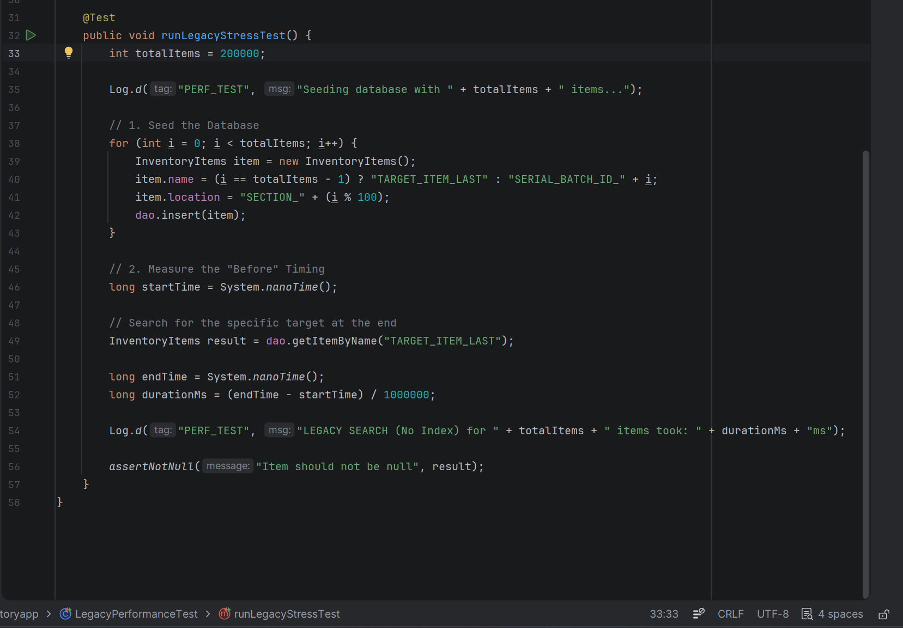
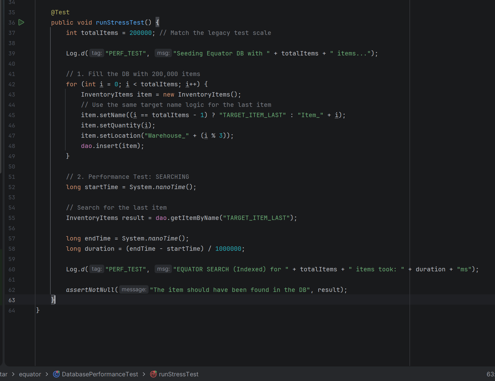
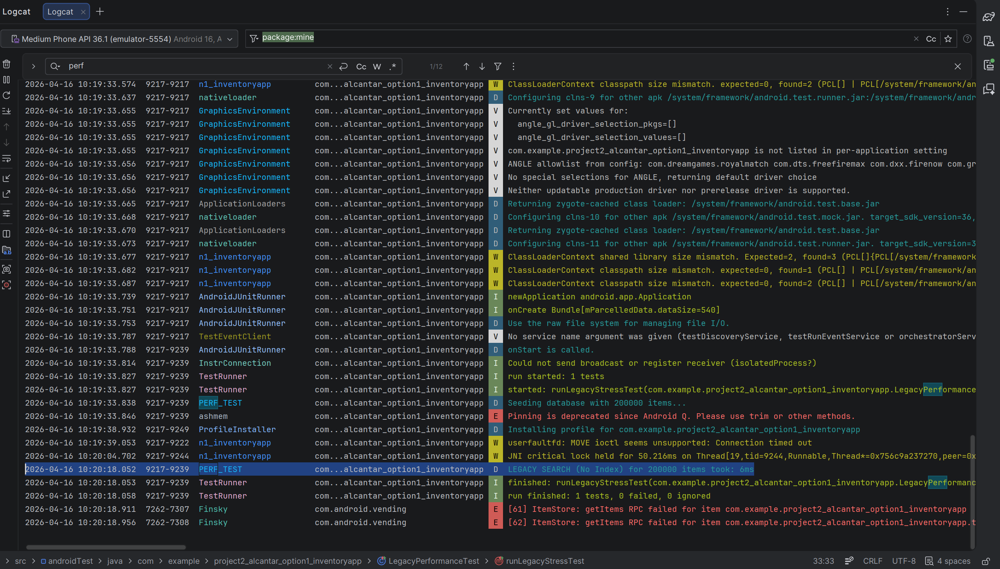
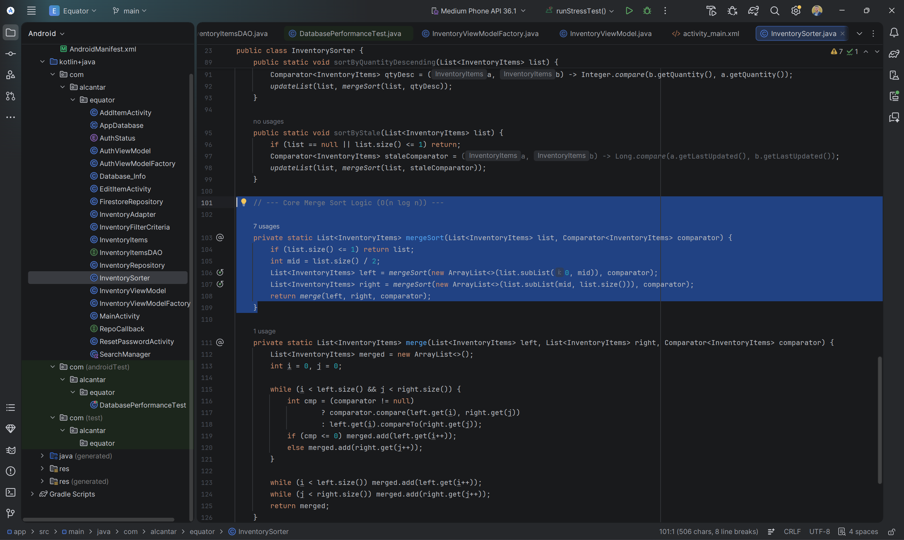
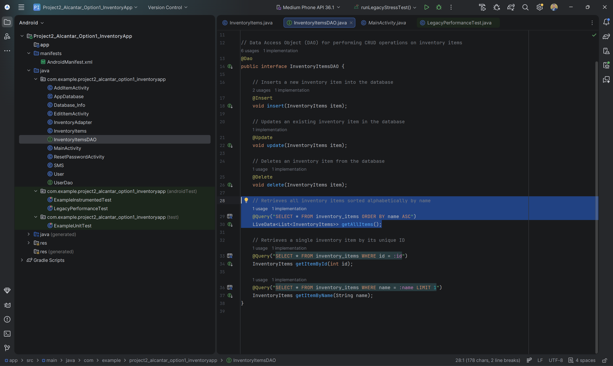
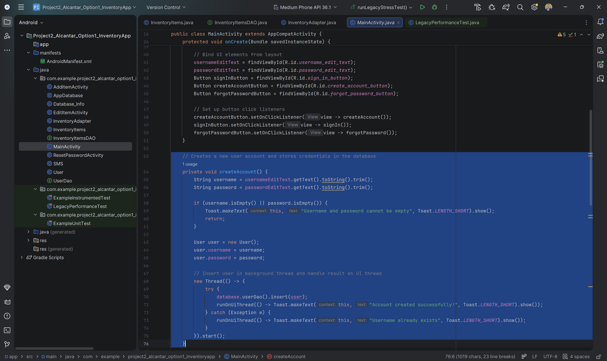
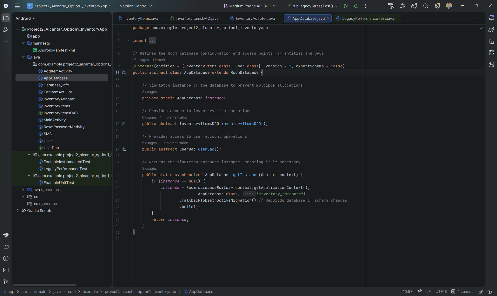
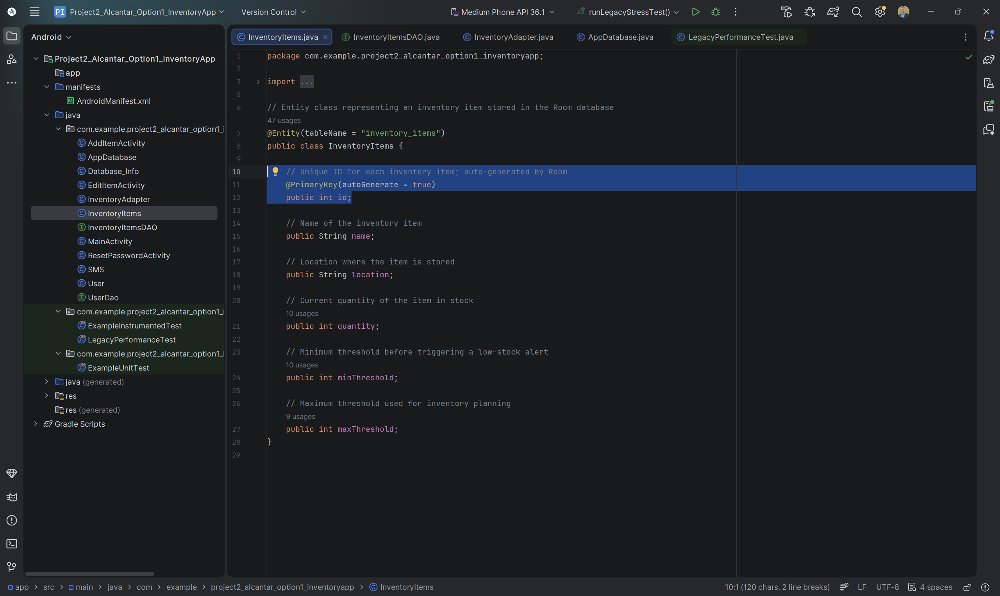

Technical Implementation
Software Engineering & MVVM Architecture
Initial State: The legacy application utilized a tightly coupled architecture where Activities managed UI logic, data persistence, and background threading simultaneously, leading to high technical debt and maintenance difficulty.
Solution: Refactored the system into a modular MVVM (Model-View-ViewModel) pattern. By implementing lifecycle-aware components and Kotlin Coroutines, I decoupled business logic from the UI layer, ensuring a scalable and testable codebase.
Database Performance & Stress Testing
Before: Unindexed Linear Search

Legacy search patterns required a full table scan of 200,000 items, leading to significant query latency as the database grew.
After: B-Tree Indexed Search

Implemented B-Tree indexing on the name column, reducing search complexity from O(n) to O(log n) during high-volume stress testing.
Empirical Performance Validation
Before: Linear Search Results

Logcat metrics show the legacy unindexed database requiring 6ms to locate a single record out of 200,000 entries.
After: Indexed Search Results

After implementing B-Tree indexing, the same search operation consistently clocked at 0ms — demonstrating near-instant data retrieval at scale.
Algorithms & Data Structures
Initial State: Data retrieval relied on basic SQL linear scans O(n), and sorting was handled by standard database ordering, which lacked stability for complex inventory datasets.
Solution: Implemented custom Binary Search and Stable Merge Sort algorithms, reducing search complexity to O(log n) and ensuring data integrity during complex sorting operations.
Data Integrity: Stable Merge Sort
Before: Standard SQL Sorting

Relied on basic SQL sorting which does not guarantee stability, potentially shifting the relative order of identical items during re-sorts.
After: Custom Merge Sort Implementation


Developed a stable Merge Sort O(n log n) with custom recursive splitting and stable comparison logic, ensuring consistent data ordering across complex inventory views.
Search Optimization: O(n) to O(log n)
Before: Linear SQL Queries

The legacy system relied on basic SQLite queries that performed linear scans O(n), resulting in higher CPU usage and increased latency as inventory grew.
After: Debounced Binary Search


Implemented a custom Binary Search algorithm coupled with a 300ms debounce mechanism in Kotlin. Search executions only trigger after the user finishes typing, eliminating redundant database overhead.
Threading & Architectural Refactor
Before: Manual Threading & Coupled Logic

Business logic and data persistence were tightly coupled within the UI Controller (MainActivity), using unmanaged manual threads that posed risks of memory leaks and race conditions.
After: Decoupled Binary Search Implementation

Implemented a standalone Binary Search algorithm fully decoupled from the UI. By ensuring a sorted pre-condition, search efficiency was optimized to O(log n), providing a scalable solution for large datasets.
Database Architecture & Security
Initial State: The application used an unauthenticated, local-only SQLite database, posing a high risk of data loss and zero protection for user information.
Solution: Migrated the storage layer to Cloud Firestore and integrated Firebase Authentication, establishing a security-first foundation with real-time synchronization and encrypted user-specific data silos.
Cloud Migration: Local SQLite to Firebase Firestore
Before: Local-Only SQLite (Room)

The legacy storage layer was restricted to a local SQLite instance, lacking multi-device synchronization and posing a significant risk of total data loss during destructive migrations.
After: Secure Cloud Firestore Integration

Migrated to a NoSQL Cloud Firestore architecture with a repository pattern that automatically scopes all data operations to the authenticated user's UID, establishing a secure and scalable data silo.
Architectural Security: Repository Pattern
Before: Exposed DAO Logic

The legacy application relied on direct Data Access Object (DAO) calls, lacking an abstraction layer and making it difficult to implement global security rules across the application.
After: Centralized Inventory Repository

Implemented a centralized Repository Pattern that decouples the UI from the database, creating a single source of truth where security checks and background execution are managed consistently.
Hybrid Data Modeling & Access Control
Before: Simple Entity Model

The original data model was a basic POJO designed only for local Room/SQLite storage, lacking indexing for search performance and any concept of user ownership or cloud-identity mapping.
After: Optimized & Secured Entity

Refactored the entity to include a B-Tree Index for optimized
local lookups. Introduced @Exclude tags to prevent ID collisions between
local and cloud layers, and added a userId field to enforce strict
data-owner separation.